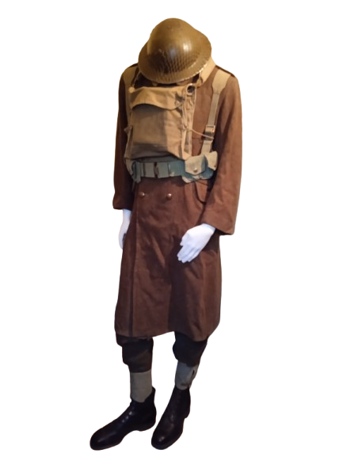
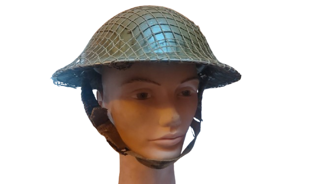
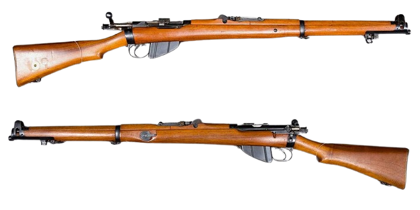
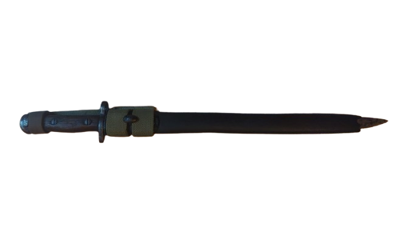
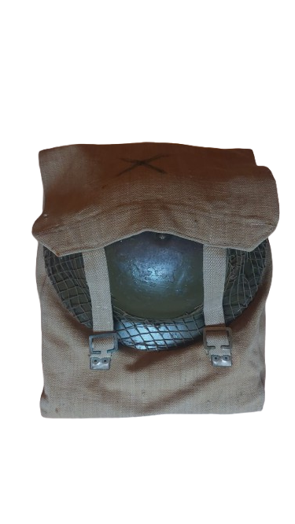
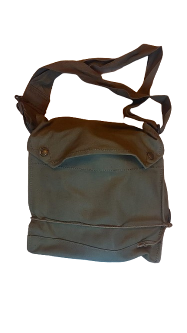
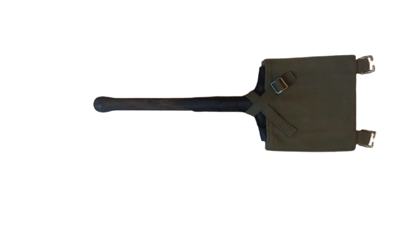

Quel était l'équipement du soldat britannique de 1940 ?
En 1939, le soldat britannique était équipé d’un matériel conçu pour répondre aux exigences d’un conflit moderne, tout en s’appuyant sur des équipements éprouvés de la Première Guerre mondiale. Voici un aperçu complet de son équipement standard :
Le soldat britannique portait un uniforme en laine, adapté aux conditions européennes. Cet uniforme comprend une tunique à quatre poches, un pantalon assorti, des guêtres en toile pour protéger les jambes (ou éventuellement de bandes molletières), ainsi que des chaussures en cuir robustes. Le casque en acier modèle Brodie, introduit pendant la Première Guerre mondiale, était encore en usage pour protéger la tête des éclats d’obus.


L’arme principale était le fusil Lee-Enfield, modèle Short Magazine Lee-Enfield (SMLE) No. 1 Mk III*, un fusil à verrou réputé pour sa précision, sa robustesse et sa cadence de tir rapide. Ce fusil utilisait des chargeurs de 10 cartouches, ce qui était un avantage par rapport à d’autres fusils de l’époque.

Chaque soldat était équipé d’une baïonnette pouvant se fixer sur le fusil pour le combat rapproché. La baïonnette était un outil polyvalent, utilisée aussi bien pour le combat que pour des tâches utilitaires.

Le système de portage standard était le « Pattern 1937 webbing », un ensemble de sangles et de poches en toile robuste. Il comprenait une ceinture, des bretelles, des porte-chargeurs pour les cartouches, un sac à dos léger (haversack) pour les effets personnels et les rations, ainsi qu’un porte-gourde.

Masque à gaz : En raison de la menace persistante des armes chimiques, chaque soldat portait un masque à gaz dans un étui protecteur.

Pelle ou outil de tranchée : Un petit outil pliable pour creuser des tranchées ou des abris.

Selon la spécialisation (infanterie, artillerie, blindés, etc.) et la mission, le matériel pouvait varier. Par exemple, les soldats de l’infanterie motorisée ou des unités blindées pouvaient porter des équipements plus légers ou spécifiques.
Ce matériel reflétait un équilibre entre mobilité, protection et capacité de combat, préparant le soldat britannique à affronter les défis du conflit mondial qui venait de commencer.